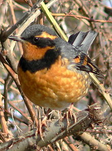
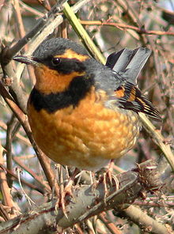

| Varied Thrush | |
|---|---|
|  | |
| Male | |
| Conservation status | |
| Binomial name | |
| Ixoreus naevius Gmelin, 1789 |
|
| Synonyms | |
|
Zoothera naevia |
| Varied Thrush | |
|---|---|
|  | |
| Male | |
| Conservation status | |
| Binomial name | |
| Ixoreus naevius Gmelin, 1789 |
|
| Synonyms | |
|
Zoothera naevia |
The Varied Thrush (Ixoreus naevius or Zoothera naevia) is a member of the thrush family Turdidae.
It breeds in western North America from Alaska to northern California. It is migratory, with northern breeders moving south within or somewhat beyond the breeding range. Other populations may only move altitudinally.
This species is an improbable transatlantic migrant, but there is an accepted western European record in Great Britain in 1982.
The breeding habitat is dense coniferous forest, with two to five eggs being laid in a tree nest. It mainly feeds near the ground, foraging for invertebrates, but also eats berries and some seeds.
The male Varied Thrush is a striking bird, and is virtually unmistakable. It is smaller than an American Robin and dark blue-gray above. It has bright orange wing bars, throat, lateral head stripe and underparts. There is a black breast band and facemask. The song is eerie and melancholic.
Female and juvenile birds are browner above and the orange is more subdued. The breast band and facemask are a blotchy brown.
There is an extremely rare variant of this species in which all the orange in the plumage is replaced by white. Interestingly, despite the scarcity of this form, the British vagrant mentioned above was of this type, leading to speculation that whatever mutation causes the colour variation also affects the navigational abilities of this thrush.

{kind=link}
{kind=link}